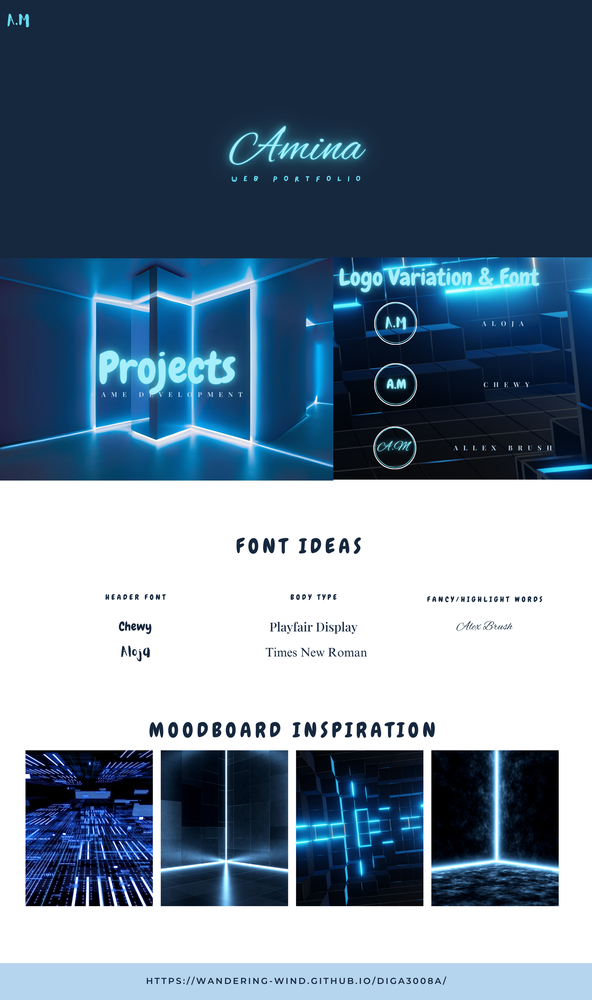
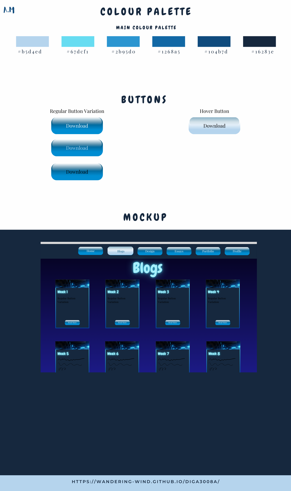

The first iteration of my web-style guide is as follows: The main aesthetics of the website in this first iteration is a very blue-tech aesthetic. This is translated through the main colour palette and the fonts (Elementor, 2020). There are ideas and variations for some aspects in the style-guide:  
The initial iteration of the visual aesthetic is tech-futuristic, since the target audience are people in the tech field. However, this is subject to change since one of the main goals for this website is readability.
In the past week, I've started working on my web-style guide. I've thought about things such as fonts, visual aesthetics, and colour palette. My current wireframes only hold a foundation for the website, and as we go on and learn about CSS and JavaScript, things such as interactive elements and user experience will be iterated. In addition, I began incorporating metadata into my HTML pages.
I struggle with mapping the layout and composition of my website. My goal within the next coming weeks is to work on a good visual hierarchy of information; this includes the use of white space. I struggle with prioritizing information based on what is interesting and what is important for the user and me. Due to this, I have noticed that I don't have a consistency, a familiarity pattern within my design structure.
I am proud of the basic foundation that the website is built on. All the information in my folder structures is sorted in an easy-to-navigate manner. In addition, I have been trying to keep updating my blogs as the weeks go on, which I am proud of since I do happen to have a procrastination problem.
Going forward, I'd like to work on my visual hierarchy of information presented on the website and incorporate UX Core Principles into the website. I'd also like to work on the white space in my design; this would mean that I iterate my wireframe designs. I'd also like to do more research on metadata and incorporate that into my pages. This ties into the consistency of the design structures that I would like to incorporate. This would include design legibility, since I usually weigh pretty fonts over legible fonts.
Elementor. (2020). How To Create A Web Design Style Guide? Template & Examples. [online] Available at: https://elementor.com/blog/web-design-style-guide/Links to an external site. [Accessed 10 Mar. 2025].